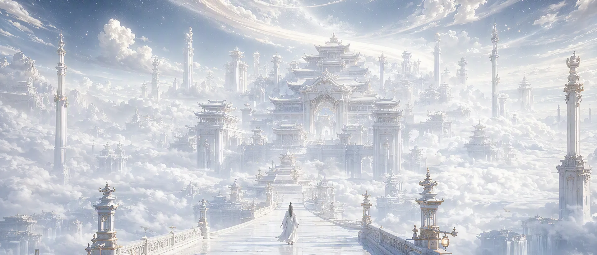

AI 影像与图像 · 2026
作品集。
- 05影像
- 03图像
- 2026年份
- AI生成

影像Films
05 / 共 01:04 · 横屏夜街 · 猫耳
Night Street自拍视角走过夜里的街，走到一半，身后多了一个人。
1280×72000:154.1 MB下载原片FACE CHECK
Face Check正面特写、打勾、再换一个角度：把「验脸」做成十五秒的梗。
960×72000:143.6 MB下载原片水畔
Waterside蓝发少女泡在水光与虹彩里，画面几乎是静的，只有高光在动。
1056×72000:154.2 MB下载原片对白
Dialogue夜车里的一场对话，浅景深，对面的人始终只露一个肩。
1600×90000:153.2 MB下载原片试剪 06
Offcut 06四秒钟的试剪，从上一段素材里留下的一个眼神。
1280×72000:042.3 MB下载原片